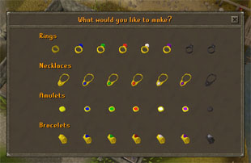
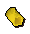
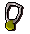
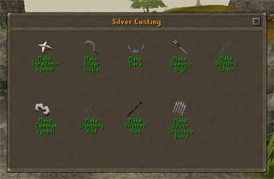
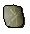
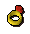
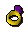
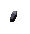

")
Crafting - Jewellery
Introduction | Gold | Silver | Stringing | Gems
Semi-precious Gemstones | Magic Gemstones | Gem-encrusted Jewellery
Semi-precious Gemstones | Magic Gemstones | Gem-encrusted Jewellery
Introduction
Many crafters enjoy making fine jewellery. Such items can then have spells cast upon them, which in turn can help with a further skill, making Crafting a valuable skill to have.
Gold

When it comes to actually making items from gold, all you need to do is take a gold bar to a furnace (which you can find by looking for this symbol
| Jewellery | Crafting Level Required | Mould Location | Crafting Experience Gained |
![[image]](../../img/main/kbase/items/jewellery/goldring.gif) Gold ring Gold ring |
5 |
Crafting stores Crafting Guild |
15 |
![[image]](../../img/main/kbase/items/jewellery/goldneck.gif) Gold necklace Gold necklace |
6 |
Crafting stores Crafting Guild |
20 |
| Gold bracelet | 7 |
Crafting stores Crafting Guild |
25 |
| Gold amulet | 8 |
Crafting stores Crafting Guild |
30 |
Silver

When it comes to actually making items from silver, all you need to do is take a silver bar to a furnace (which you can find by looking for the furnace symbol on your minimap) while you have a mould of the type of item you want to make stored in your inventory, use the silver bar on the furnace and a menu will appear containing images of the items you can make: select the one you want and work will begin.
For making a symbol, you will need to acquire either a holy symbol mould (available from all good Crafting stores), or an unholy symbol mould (gained from the Spirit of Scorpius upon completion of Observatory Quest), a silver bar and a ball of wool.
When you have these three items in your inventory (mould, bar and wool) simply use the silver bar on a furnace and choose the holy symbols option, choose which symbol you wish to make (if you have both moulds on you) and an unstrung symbol appear in your inventory in place of the silver.
| Item | Crafting Level Required | Required Quest Completion | Mould Location | Crafting Experience Gained |
![[image]](../../img/main/kbase/items/symbols_sickles/unstholy.gif) Unstrung holy symbol Unstrung holy symbol |
16 |
None | Crafting stores Crafting Guild |
50 |
![[image]](../../img/main/kbase/items/symbols_sickles/unstunholy.gif) Unstrung unholy symbol Unstrung unholy symbol(Members Only) |
17 |
Observatory Quest | Obtained from the spirit of Scorpius upon completing the Observatory Quest | 50 |
![[image]](../../img/main/kbase/items/symbols_sickles/sickle.gif) Silver sickle Silver sickle(Members only) |
18 |
The Nature Spirit | Crafting stores | 50 |
![[image]](../../img/main/kbase/items/misc/conductor.gif) Lightning conductor Lightning conductor(Members only) |
20 |
Creature of Fenkenstrain | Obtained from Dr Fenkenstrain during Creature of Fenkenstein | 50 |
![[image]](../../img/main/kbase/items/tiara/tiara.gif) Tiara Tiara |
23 |
None | Crafting stores Crafting Guild |
52.5 |
Stringing
For adding string to unstrung symbols or amulets, you will receive 4 Crafting experience. To make strung amulets or symbols, simply use a ball of wool with the unstrung item. Balls of wool can be obtained from shearing sheep and spinning the wool.
![[image: ball of wool]](../../img/main/kbase/items/misc/ballwool.gif "ball of wool") |
+ | |
= | ![[image: strung holy symbol]](../../img/main/kbase/items/symbols_sickles/holysym.gif "strung holy symbol") |
Apart from wool, it should be noted that to string an amulet of nature, you will not use wool/string, but magic string. To make this string, you must first obtain magic roots (from digging up a magic tree through use of the Farming skill) and then spin the roots in the same method used for string.
Gems
There comes a stage where your Crafting level will enable you to cut and use gems on your normal items. This will not only increase the value of the item, but the item's potential. Magic can be used upon such items and they can become items of power, used for a variety of skills and even transportation methods.
To cut a gem, simply use a chisel on it. Be aware, however, that there is a chance that the gem will shatter when you do so, but this risk dimishes with a higher Crafting level. You may also store large varieties of gem in a gem bag, bought from the rewards trader of Daemonheim.
Semi-precious Gemstones (Members Only)
On Karamja there lies a hidden mine and only those who have completed the Shilo Village quest are able to journey there.
| Gem | Crafting Level Required to Cut | Crafting Experience Gained |
| Uncut opal | 1 |
15 3.8 if crushed |
![[image]](../../img/main/kbase/items/gems/uncut_jade.gif) Uncut jade Uncut jade |
13 |
20 5 if crushed |
![[image]](../../img/main/kbase/items/gems/uncut_red_topaz.gif) Uncut red topaz Uncut red topaz |
16 |
25 6.3 if crushed |
All of these gems can be made into tips for crossbow bolts. For further information, see Fletching - Making Bolts.
Magic Gemstones
| Gem | Crafting Level Required to Cut | Crafting Experience Gained |
![[image]](../../img/main/kbase/items/gems/uncut_sapphire.gif) Uncut sapphire Uncut sapphire |
20 |
50 |
![[image]](../../img/main/kbase/items/gems/uncut_emerald.gif) Uncut emerald Uncut emerald |
27 |
67.5 |
![[image]](../../img/main/kbase/items/gems/uncut_ruby.gif) Uncut ruby Uncut ruby |
34 |
85 |
![[image]](../../img/main/kbase/items/gems/uncut_diamond.gif) Uncut diamond Uncut diamond |
43 |
107.5 |
![[image]](../../img/main/kbase/items/gems/uncut_dragonstone.gif) Uncut dragonstone (Members only) Uncut dragonstone (Members only) |
55 |
137.5 |
![[image]](../../img/main/kbase/items/gems/uncut_onyx.gif) Uncut onyx Uncut onyx (Members only) |
67 |
167.5 |
Gem-encrusted Jewellery
The process of making gem-encrusted jewellery is relatively simple, but it can be difficult to get exactly right, and so it takes the steady hand of a master craftsman.
Take a gold bar, a mould of the appropriate type, and a cut gem of the appropriate type to a furnace, use the gold bar on the furnace and select the type of jewellery you want to make.
Item |
Crafting Level Required |
Crafting Experience Gained |
![[image]](../../img/main/kbase/items/jewellery/bluering.gif) Sapphire ring Sapphire ring |
20 |
40 |
![[image]](../../img/main/kbase/items/jewellery/blueneck.gif) Sapphire necklace Sapphire necklace |
22 |
55 |
![[image]](../../img/main/kbase/items/jewellery/sapphbrace.gif) Sapphire bracelet Sapphire bracelet |
23 |
60 |
![[image]](../../img/main/kbase/items/amulets/saph_unstrung2.gif) Sapphire amulet Sapphire amulet |
24 |
65 |
![[image]](../../img/main/kbase/items/jewellery/greenring.gif) Emerald ring Emerald ring |
27 |
55 |
![[image]](../../img/main/kbase/items/jewellery/greenneck.gif) Emerald necklace Emerald necklace |
29 |
60 |
![[image]](../../img/main/kbase/items/jewellery/emerbrace.gif) Emerald bracelet Emerald bracelet |
30 |
65 |
![[image]](../../img/main/kbase/items/amulets/emerald_unstrung2.gif) Emerald amulet* Emerald amulet* |
31 |
70 |
| Ruby ring | 34 |
70 |
![[image]](../../img/main/kbase/items/jewellery/redneck.gif) Ruby necklace Ruby necklace |
40 |
75 |
![[image]](../../img/main/kbase/items/jewellery/rubybrace.gif) Ruby bracelet Ruby bracelet |
42 |
80 |
![[image]](../../img/main/kbase/items/jewellery/whitering.gif) Diamond ring Diamond ring |
43 |
85 |
![[image]](../../img/main/kbase/items/amulets/ruby_unstrung2.gif) Ruby amulet Ruby amulet |
50 |
85 |
| Dragonstone ring | 55 |
100 |
![[image]](../../img/main/kbase/items/jewellery/whiteneck.gif) Diamond necklace Diamond necklace |
56 |
90 |
![[image]](../../img/main/kbase/items/jewellery/abyssbrace.gif) Diamond bracelet Diamond bracelet |
58 |
95 |
![[image]](../../img/main/kbase/items/jewellery/blackring.gif) Onyx ring Onyx ring |
67 |
115 |
![[image]](../../img/main/kbase/items/amulets/dia_unstrung2.gif) Diamond amulet Diamond amulet |
70 |
100 |
![[image]](../../img/main/kbase/items/jewellery/purpleneck.gif) Dragonstone necklace Dragonstone necklace |
72 |
105 |
![[image]](../../img/main/kbase/items/jewellery/combbrace.gif) Dragonstone bracelet Dragonstone bracelet |
74 |
110 |
![[image]](../../img/main/kbase/items/amulets/dragon_unstrung2.gif) Dragonstone amulet Dragonstone amulet |
80 |
150 |
![[image]](../../img/main/kbase/items/jewellery/blackneck.gif) Onyx necklace Onyx necklace |
82 |
120 |
![[image]](../../img/main/kbase/items/jewellery/onyxbrace.gif) Onyx bracelet Onyx bracelet |
84 |
125 |
 Onyx amulet |
90 |
165 |
* If you string an emerald amulet with a magic string and enchant it, it is possible to make an amulet of nature.
Please refer to the Magic - Non Combat Magic section of the manual for more details on how to enchant your gem-encrusted jewellery.
Click here to view the Crafting FAQs

More articles in
Crafting
|
|
|
Further Help
If this article does not help you, you may find the following sections of the RuneScape site helpful:
|
|